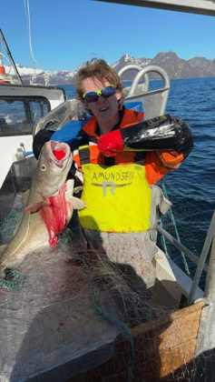

Utplasseringselev
Eirik
Utplasseringselev. Lærer arbeidsflyten om bord – og har ifølge mannskapslista sparken.
Amundsen Joss & Ball fisker kvitfisk i Lofoten med garn. Lite mannskap, lange dager og full drift når fisken står.

Vi driver garnfiske etter kvitfisk i Lofoten. Garn settes på aktuelle felt, får stå i sjøen og trekkes om bord igjen. Fangsten løsnes fra maskene, sorteres, sløyes og behandles før levering. Vær, strøm, dybde og hvor fisken står påvirker hele arbeidsdagen.
Utplasseringselev. Lærer arbeidsflyten om bord – og har ifølge mannskapslista sparken.

Sjef om bord og stor-shipper. Holder oversikt over drift, garn, fangst og mannskap.

Styrmann og teknisk altmuligmann når utstyr og elektrisk må fungere.
Har HMS-ansvaret og følger opp sikkerhet, orden og arbeidsflyt på dekk.

Shipper og reder for M/S May. En del av laget på sjøen og rundt drifta.
Garnlenkene settes på eller nær bunnen der man forventer fisk. Plassering, dybde, strøm og vær påvirker settingen.
Garnene hales tilbake til sjarken. Fisken tas løs fortløpende mens redskapen kontrolleres og klargjøres.
Torsk og skrei står sentralt, men sei og hyse kan også komme i garnene. Fangsten håndteres raskt for å bevare kvaliteten.
Se garnet bli kastet fra sjarken og synke ned i sjøen. Trekk torsk, skrei, sei og hyse, tjen penger, bytt fiskefelt og bygg opp båten.
6 oppgraderingssystemer: garn, lasterom, sjark, garnhaler, ekkolodd og kjøling.
START SJARKSPILLET →Stor-shipper · Sjef om bord